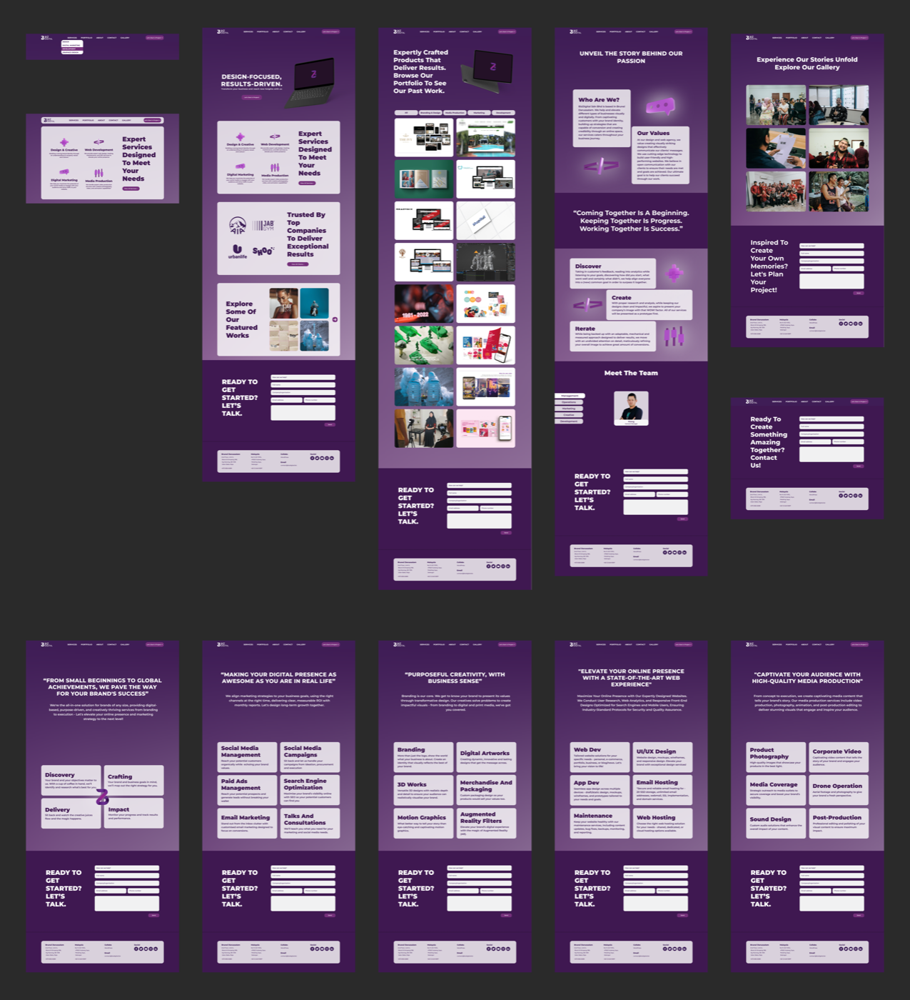

BizDigital: a research-led agency redesign
An agency's own portfolio is its biggest pitch. I rebuilt BizDigital's site around what users actually did, not what we assumed, and the numbers moved.

The challenge
A web agency lives or dies on its own portfolio site, yet BizDigital's wasn't converting visitors into enquiries. The brief was open-ended: improve engagement and generate more leads, with the credibility of public and private sector clients (including a government contract for the Ministry of Education's national educational expo) on the line.
My approach
Rather than redesign on taste, I let evidence drive every decision and validated changes before committing to them.
- User research to understand who was landing on the site and what they were trying to do.
- Iterative usability testing, designing, testing, and refining in cycles rather than a single big reveal.
- Flow and content restructuring to surface the work and make the path to enquiry obvious.
- Visual refresh that matched the quality of the agency's actual client output.
The results
The redesign didn't just look better, it performed measurably better against the two goals that mattered.
What I took from it
This was where my research-led habit really set in: usability testing turns design from an opinion into a decision. It's the same discipline I now apply to client work with heatmaps and analytics, find the friction, fix it, measure the lift.
Need more conversions?
I redesign around evidence, research, testing, and the metric you actually care about.